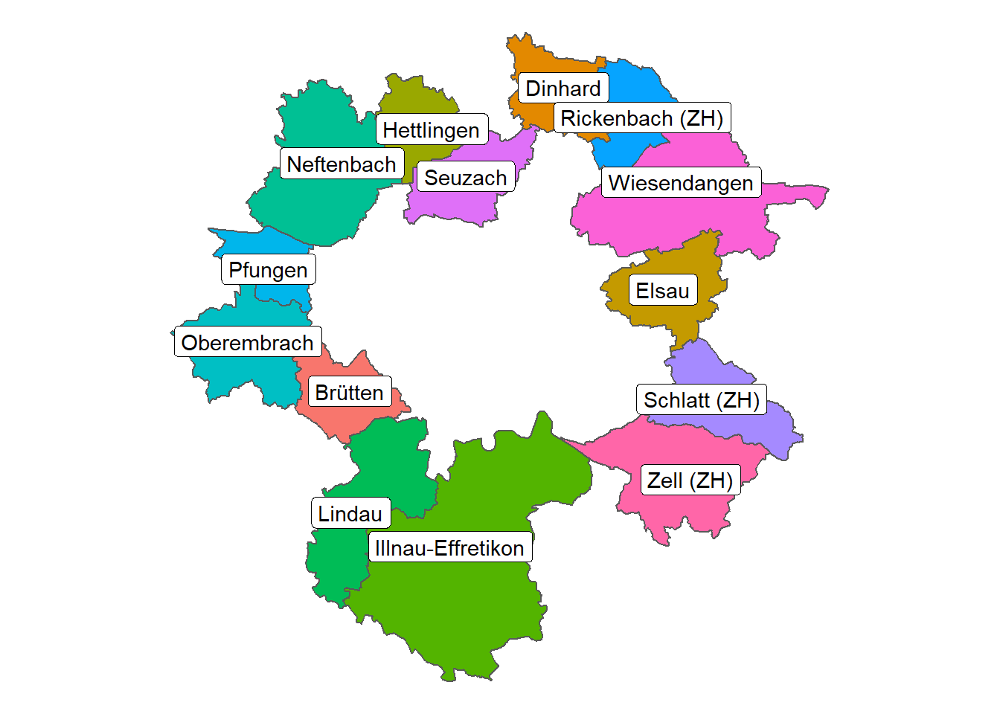
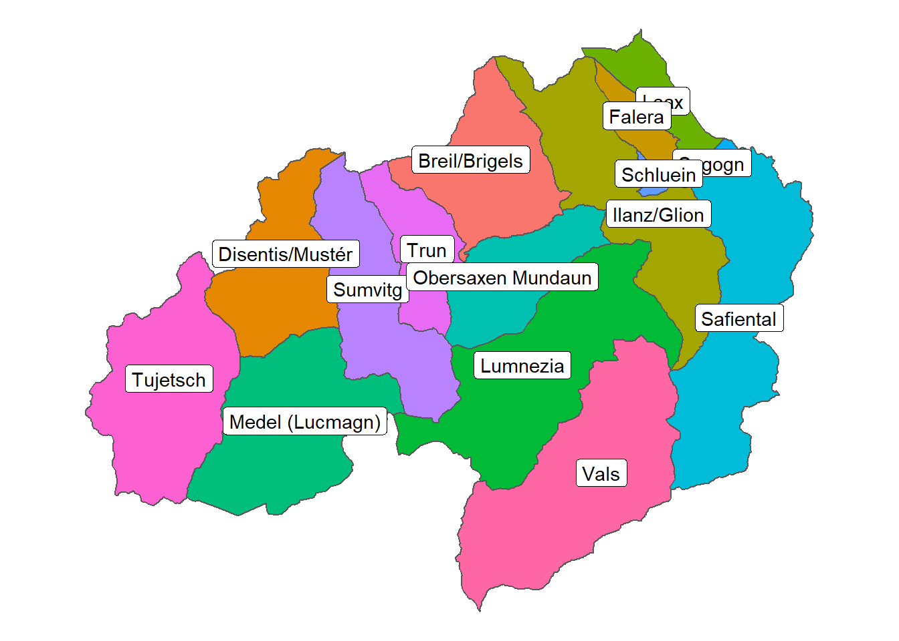

Chapter 3 Swissboundries3D
What layers are available in the geopackage?
## Driver: GPKG
## Available layers:
## layer_name geometry_type features fields
## 1 bezirksgebiet 3D Polygon 159 21
## 2 hoheitsgebiet 3D Polygon 2361 23
## 3 kantonsgebiet 3D Polygon 51 20
## 4 landesgebiet 3D Polygon 4 19What columns / fields do these layers have?
## $bezirksgebiet
## [1] "fid" "geom" "UUID" "DATUM_AEND" "DATUM_ERST"
## [6] "ERSTELL_J" "ERSTELL_M" "REVISION_J" "REVISION_M" "GRUND_AEND"
## [11] "HERKUNFT" "HERKUNFT_J" "HERKUNFT_M" "OBJEKTART" "BEZIRKSNUM"
## [16] "SEE_FLAECH" "REVISION_Q" "BEZIRKSFLA" "BEZIRK_TEI" "NAME"
## [21] "KANTONSNUM" "ICC" "EINWOHNERZ"
##
## $hoheitsgebiet
## [1] "fid" "geom" "UUID" "DATUM_AEND" "DATUM_ERST"
## [6] "ERSTELL_J" "ERSTELL_M" "REVISION_J" "REVISION_M" "GRUND_AEND"
## [11] "HERKUNFT" "HERKUNFT_J" "HERKUNFT_M" "OBJEKTART" "BEZIRKSNUM"
## [16] "SEE_FLAECH" "REVISION_Q" "NAME" "KANTONSNUM" "ICC"
## [21] "EINWOHNERZ" "BFS_NUMMER" "GEM_TEIL" "GEM_FLAECH" "SHN"
##
## $kantonsgebiet
## [1] "fid" "geom" "UUID" "DATUM_AEND" "DATUM_ERST"
## [6] "ERSTELL_J" "ERSTELL_M" "REVISION_J" "REVISION_M" "GRUND_AEND"
## [11] "HERKUNFT" "HERKUNFT_J" "HERKUNFT_M" "OBJEKTART" "REVISION_Q"
## [16] "ICC" "KANTONSNUM" "SEE_FLAECH" "KANTONSFLA" "KT_TEIL"
## [21] "NAME" "EINWOHNERZ"
##
## $landesgebiet
## [1] "fid" "geom" "UUID" "DATUM_AEND" "DATUM_ERST"
## [6] "ERSTELL_J" "ERSTELL_M" "REVISION_J" "REVISION_M" "GRUND_AEND"
## [11] "HERKUNFT" "HERKUNFT_J" "HERKUNFT_M" "OBJEKTART" "REVISION_Q"
## [16] "ICC" "SEE_FLAECH" "NAME" "EINWOHNERZ" "LANDESFLAE"
## [21] "LAND_TEIL"What other tables are available in this Geopackage / SQLite Database?
## [1] "bezirksgebiet" "gpkg_contents"
## [3] "gpkg_extensions" "gpkg_geometry_columns"
## [5] "gpkg_metadata" "gpkg_metadata_reference"
## [7] "gpkg_ogr_contents" "gpkg_spatial_ref_sys"
## [9] "gpkg_tile_matrix" "gpkg_tile_matrix_set"
## [11] "hoheitsgebiet" "kantonsgebiet"
## [13] "landesgebiet" "rtree_bezirksgebiet_geom"
## [15] "rtree_bezirksgebiet_geom_node" "rtree_bezirksgebiet_geom_parent"
## [17] "rtree_bezirksgebiet_geom_rowid" "rtree_hoheitsgebiet_geom"
## [19] "rtree_hoheitsgebiet_geom_node" "rtree_hoheitsgebiet_geom_parent"
## [21] "rtree_hoheitsgebiet_geom_rowid" "rtree_kantonsgebiet_geom"
## [23] "rtree_kantonsgebiet_geom_node" "rtree_kantonsgebiet_geom_parent"
## [25] "rtree_kantonsgebiet_geom_rowid" "rtree_landesgebiet_geom"
## [27] "rtree_landesgebiet_geom_node" "rtree_landesgebiet_geom_parent"
## [29] "rtree_landesgebiet_geom_rowid" "sqlite_sequence"## table_name data_type identifier description last_change
## 1 bezirksgebiet features bezirksgebiet 2020-07-09T14:42:06.163Z
## 2 hoheitsgebiet features hoheitsgebiet 2020-07-09T14:42:09.860Z
## 3 kantonsgebiet features kantonsgebiet 2020-07-09T14:42:10.254Z
## 4 landesgebiet features landesgebiet 2020-07-09T14:42:10.471Z
## min_x min_y max_x max_y srs_id
## 1 2494310 1075270 2833860 1295930 4327
## 2 2485410 1075270 2833860 1295930 4328
## 3 2485410 1075270 2833860 1295930 4329
## 4 2485410 1075270 2833860 1295930 4330What are all the names of “Gemeinden”?
dbGetQuery(conn, "SELECT DISTINCT NAME FROM hoheitsgebiet") %>%
pull(NAME) %>%
paste(collapse = ", ")## [1] "Scuol, Glarus Süd, Zernez, Surses, Lac Léman (VD), Bagnes, Davos, Bregaglia, Anniviers, Zermatt, Innertkirchen, Klosters-Serneus, Evolène, Blenio, Guttannen, Val Müstair, Poschiavo, Bergün Filisur, Lavizzara, Vals, Fieschertal, Muotathal, Grindelwald, Lumnezia, Orsières, Mesocco, Lauterbrunnen, Bellinzona, Obergoms, Arosa, Glarus Nord, Safiental, Cevio, Valsot, Naters, Silenen, Mels, S-chanf, Rheinwald, Medel (Lucmagn), Kandersteg, Tujetsch, Ilanz/Glion, Faido, Diemtigen, Goms, Pfäfers, Reichenbach im Kandertal, Val-de-Travers, Val-de-Ruz, Lenk, Saanen, Pontresina, Château-d'Oex, Bodensee (TG), Val-de-Charmey, Maggia, Saas-Almagell, Einsiedeln, Flühli, Hérémence, Escholzmatt-Marbach, Onsernone, Göschenen, Glarus, Sumvitg, Le Chenit, Wassen, Serravalle, Breil/Brigels, Bex, Airolo, Albula/Alvra, Avers, Nesslau, Wolfenschiessen, Kerns, Zürich, Simplon, Disentis/Mustér, Blatten, Bourg-Saint-Pierre, St. Niklaus, Lugano, Adelboden, Wildhaus-Alt St. Johann, Riviera, Zwischbergen, Nendaz, Giswil, Conthey, Lac de Neuchâtel (NE), Luzein, Gurtnellen, Unterschächen, Realp, Boltigen, Sarnen, Quinto, Bedretto, Flums, Ferrera, Engelberg, Quarten, Zweisimmen, Frutigen, Haute-Sorne, Savièse, Obersaxen Mundaun, Winterthur, Leukerbad, Plaffeien, Gambarogno, Binn, Ormont-Dessous, Sils im Engadin/Segl, Samedan, La Punt-Chamues-ch, Gsteig, Andermatt, Trub, Acquarossa, Clos du Doubs, Isenthal, Schiers, Ormont-Dessus, St. Stephan, Eggiwil, Haut-Intyamon, Crans-Montana, Ollon, Sumiswald, Erstfeld, Biasca, Rossa, Täsch, Grengiols, Lauenen, Liddes, Schwende, Sachseln, Rüschegg, Lavertezzo, Zuoz, Alpnach, Samnaun, Entlebuch, Zürichsee (ZH), La Chaux-de-Fonds, Sigriswil, Ayent, Jaun, Leuk, Guggisberg, Eschenbach (SG), Estavayer, Grabs, Randa, Salvan, Centovalli, Schwyz, Bürglen (UR), Trun, Arzier-Le Muids, Visperterminen, Bern, Wattwil, Habkern, Köniz, Lostallo, Mosnang, Flims, Oberems, Innerthal, Seewis im Prättigau, Neckertal, Walenstadt, Rougemont, Churwalden, Brione (Verzasca), Arth, Langnau im Emmental, Urnäsch, Evionnaz, Brienz (BE), Châtel-Saint-Denis, Thunersee, Amden, Ried-Brig, Trin, Attinghausen, Val Terbi, Bodensee (SG), Lungern, Unteriberg, Soazza, Andeer, Brusio, Oberwil im Simmental, Domleschg, Ruswil, Schwarzenburg, Silvaplana, Ebnat-Kappel, Mont-Noble, Campo (Vallemaggia), Grüsch, Trimmis, Kirchberg (SG), Vaz/Obervaz, Beromünster, La Grande-Béroche, Spiringen, Schaffhausen, La Brévine, Wartau, Hasliberg, Sennwald, Willisau, Haute-Ajoie, Rüte, Tamins, Meiringen, Lac de Neuchâtel (VD), Hasle (LU), Saas-Fee, Schänis, Trient, Sainte-Croix, St. Gallen, Schwarzenberg, Val-d'Illiez, Bielersee (BE), Personico, Champéry, Roveredo (GR), Schüpfheim, Eisten, Fully, Luthern, Calanca, Brig-Glis, Sonogno, Martigny-Combe, Romoos, Lausanne, Saint-Martin (VS), Troistorrents, Röthenbach im Emmental, Erlenbach im Simmental, Schangnau, Capriasca, Wohlen bei Bern, Gibloux, Oberägeri, Küssnacht (SZ), Monteceneri, Wädenswil, Mümliswil-Ramiswil, Ernen, Hospental, Sion, Sufers, Oberriet (SG), Turtmann-Unterems, Gommiswald, Vouvry, Montanaire, Montreux, Bas-Intyamon, Furna, Oberiberg, Beckenried, Illnau-Effretikon, Därstetten, Zug, Vilters-Wangs, Le Lieu, Chamoson, Maienfeld, Kandergrund, Mendrisio, Villeneuve (VD), Rüeggisberg, Fraubrunnen, L'Abbaye, Provence, Saignelégier, Laax, Schattenhalb, Rapperswil-Jona, Waldkirch, Hergiswil bei Willisau, Cazis, Altstätten, Luzern, La Baroche, Aeschi bei Spiez, Horgen, Düdingen, Fischingen, Raron, Menznau, Sevelen, Fischenthal, Saas-Balen, Collombey-Muraz, Riggisberg, Brienzersee, Ergisch, Bauma, Semsales, Beatenberg, Baltschieder, Schübelbach, Les Verrières, Grono, Bettmeralp, St. Moritz, Emmetten, Malters, Uster, Gruyères, Wynigen, Chur, Vorderthal, Ferden, Tschiertschen-Praden, Untervaz, Menzingen, Gossau (SG), Frauenfeld, Avegno Gordevio, Kriens, Reiden, Leytron, Unterägeri, Nods, Hitzkirch, Triesen, Neuenkirch, Mühleberg, Grenchen, Montricher, Frasco, Jenaz, Rochefort, Belmont-Broye, Casti-Wergenstein, La Sagne, Plateau de Diesse, Breggia, Bad Ragaz, Fideris, Weggis, Wald (ZH), Turbenthal, Herisau, Bière, Kemmental, Martigny, Valbroye, Baar, Tramelan, Vechigen, Icogne, Saas-Grund, Gonten, Les Bois, Tschappina, Oron, Court, Altendorf, Zillis-Reischen, Elgg, Chalais, Mont-Vully, Saint-Gingolph, Grandvillard, Saint-Cergue, Domat/Ems, Payerne, Homburg, La Roche, Hundwil, Celerina/Schlarigna, Vuisternens-devant-Romont, Stammheim, Petit-Val, Riddes, Vogorno, Ins, Dagmersellen, Bulle, Basel, Péry-La Heutte, Sonvilier, Gersau, Hohenrain, Brissago, Morschach, Rossinière, Belp, Saxon, Vallorbe, Madiswil, Le Locle, Bever, Triesenberg, Gampel-Bratsch, Basse-Allaine, Risch, Alpthal, Puidoux, Finhaut, Rothenthurm, Beinwil (SO), Buchegg, Rapperswil (BE), Baulmes, Falera, Wimmis, Cheyres-Châbles, Hinwil, Gams, Courtelary, Bäretswil, Heimiswil, Signau, Triengen, Unterbäch, Alto Malcantone, Corbeyrier, Bosco/Gurin, Murten, Delémont, Iseltwald, Hasle bei Burgdorf, Courtepin, Bütschwil-Ganterschwil, Neuenegg, Lantsch/Lenz, Eriz, Schleitheim, Orvin, Mettauertal, Thun, Courrendlin, Arbedo-Castione, Gais, Biel/Bienne, Lauperswil, Lützelflüh, Wilchingen, Worb, Vionnaz, Vully-les-Lacs, Saint-Imier, Seedorf (BE), Wil (SG), Bassins, Grône, Freienbach, Horw, Ardon, Le Noirmont, Emmen, Sins, Siviriez, Hemberg, Oberried am Brienzersee, Cerentino, Monthey, Fontenais, Aadorf, Thayngen, Sisikon, Schüpfen, Mont-la-Ville, Courroux, Grosswangen, Moutier, Pfäffikon, Giornico, Avenches, Selzach, Krauchthal, Saxeten, Chavornay, Kloten, Arbaz, San Vittore, Wiesendangen, Sierre, Cham, Riederalp, Amriswil, Satigny, Seelisberg, Bussnang, Gimel, Sâles, Möhlin, Valbirse, Beringen, Hünenberg, Termen, Kaltbrunn, Murgenthal, Leysin, Haldenstein, Le Mouret, Egnach, Forel (Lavaux), Courgenay, Conters im Prättigau, Genève, Gossau (ZH), Montfaucon, Cugnasco-Gerra, Seedorf (UR), Liestal, Les Ponts-de-Martel, Plasselb, Neuchâtel, Kaisten, Kallnach, Schlatt-Haslen, Neunkirch, Pleigne, Vollèges, Oberbüren, Ennetbürgen, Horrenbach-Buchen, Sembrancher, Pfaffnau, Corgémont, Hüttwilen, Jorat-Menthue, Niedergesteln, Merishausen, Törbel, Montagny (FR), Feusisberg, Schwellbrunn, Sattel, Römerswil, Niederbipp, La Chaux-du-Milieu, Huttwil, Gränichen, Langenthal, Walkringen, Rüderswil, Wigoltingen, Stansstad, Hergiswil (NW), Utzenstorf, Appenzell, Bullet, Prato (Leventina), Wetzikon (ZH), Seeberg, Boudry, St. Antoni, Spiez, Buttisholz, Gündlischwand, Ingenbohl, Muttenz, Delley-Portalban, La Rippe, Bolligen, Benken (SG), Oberdiessbach, Wängi, Aigle, Niederhelfenschwil, Schattdorf, Kleinlützel, Seewen, Herbetswil, Villeret, L'Isle, Oberdorf (NW), Alterswil, Ueberstorf, Brot-Plamboz, Bülach, Blonay, Rheinfelden, Savigny, Gurmels, Trachselwald, Buchs (SG), Walchwil, Schaan, Niederbüren, Werthenstein, Münsingen, Flüelen, St. Ursen, Balsthal, Le Cerneux-Péquignot, Langenbruck, Trubschachen, Moudon, Basadingen-Schlattingen, Thundorf, Burgdorf, Albinen, Schlatt (TG), Cudrefin, Blumenstein, Bözberg, Laupersdorf, Rothenburg, Weinfelden, Villorsonnens, Dallenwil, Ersigen, Buchholterberg, Hallau, Schötz, Teufen (AR), Isérables, Gryon, Saint-Légier-La Chiésaz, Versoix, Mathon, Tuggen, Grossaffoltern, Bönigen, Port-Valais, Neftenbach, Rüegsau, Saint-Brais, Ausserberg, Cama, Sonceboz-Sombeval, Ennetmoos, Ursy, Saint-Maurice, Wiler (Lötschen), Nottwil, Lyss, Tavannes, Maur, Porrentruy, Cortébert, Radelfingen, Bowil, Regensdorf, Kirchdorf (BE), Dalpe, Wattenwil, Egg, Uzwil, Laufenburg, Amlikon-Bissegg, Affeltrangen, Bonaduz, Bösingen, Wolhusen, Vérossaz, Scharans, Tévenon, Staldenried, Grächen, Stocken-Höfen, Russikon, Lavey-Morcles, La Ferrière, Dürrenroth, Marthalen, Lütisburg, Eischoll, Oberuzwil, Fläsch, Volketswil, Steg-Hohtenn, Uesslingen-Buch, Unterseen, Lens, Degersheim, Bellwald, Hägendorf, Meggen, Zell (LU), Saicourt, Leuggern, Herdern, Bure, Brittnau, Les Genevez (JU), Dübendorf, Hausen am Albis, Bonfol, Courtételle, Bourrignon, Yverdon-les-Bains, Merenschwand, Ramsen, Schmitten (FR), Soubey, Cormoret, Sauge, La Verrerie, Bürchen, Yvonand, Felsberg, Embd, Rhäzüns, Steffisburg, Wald (BE), Echichens, Wünnewil-Flamatt, Galgenen, Lostorf, Linden, Locarno, Eschenbach (LU), Visp, Wilderswil, Vaulion, Pfyn, Berg (TG), Ossingen, Bovernier, Vex, Mettmenstetten, Welschenrohr, Zell (ZH), Hittnau, Bernex, Aedermannsdorf, Stadel, Apples, Oftringen, Isone, La Côte-aux-Fées, Varen, Weisslingen, Konolfingen, Embrach, Lengnau (AG), Oberhelfenschwil, Gaiserwald, Renan (BE), Büren an der Aare, Beggingen, Ettiswil, Dorénaz, Gingins, Densbüren, Lignières, Hauptwil-Gottshaus, Wohlen (AG), Develier, Baden, Liesberg, Schongau, Rümlang, Oberbalm, Lajoux (JU), Sirnach, Küsnacht (ZH), Boécourt, Muri (AG), Aarau, Lucens, Saint-George, Birwinken, Kerzers, Biberist, Schinznach, Lütschental, Wäldi, Ufhusen, Zihlschlacht-Sitterdorf, Collonges, Yvorne, Bettlach, Erlen, Hombrechtikon, Mergoscia, Ascona, Corcelles-près-Payerne, Wuppenau, Ochlenberg, Oensingen, Orbe, Buochs, Roggwil (TG), Stallikon, Lindau, Eschenz, Marchissy, Pont-en-Ogoz, Hauterive (FR), Bichelsee-Balterswil, Kirchlindach, Meilen, Villmergen, Oberdorf (SO), Endingen, Glattfelden, Küttigen, Messen, Montilliez, Hauteville, Rothrist, Rickenbach (LU), Steinen, Castel San Pietro, Wagenhausen, Boswil, Vitznau, Wittenbach, Les Planchettes, Bürglen (TG), Wyssachen, Kippel, Le Bémont (JU), Sempach, Oberburg, Coeuve, Bubikon, Hüttlingen, Wichtrach, Terre di Pedemonte, Bischofszell, Kreuzlingen, Tägerwilen, Reichenburg, Les Brenets, Affoltern im Emmental, Olten, Flawil, Gänsbrunnen, Birmensdorf (ZH), Treyvaux, Malans, Laufen, Misery-Courtion, Concise, Zeiningen, Salgesch, Bremgarten (AG), Neunforn, Jussy, Schmitten (GR), Eriswil, Jegenstorf, Lenzburg, Beinwil (Freiamt), Niederhasli, Reutigen, Matzendorf, Wittnau, Diepoldsau, Villigen, Riemenstalden, Rue, Bärschwil, Twann-Tüscherz, Eptingen, Buseno, Vaduz, Pampigny, Jorat-Mézières, Stans, Zofingen, Fiesch, Magden, Zizers, Wangen (SZ), Jonschwil, Mollens (VD), Kappelen, Muriaux, Illgau, Oberkirch, Kradolf-Schönenberg, Rothenfluh, Schönholzerswilen, Romont (FR), Landquart, Riehen, Langrickenbach, Les Breuleux, Bubendorf, Corbières, Pratteln, Goumoëns, Collonge-Bellerive, Rafz, Lignerolle, Suhr, Alle, Wettingen, Affoltern am Albis, Chéserex, Wildberg, Oberthal, Jenins, Gampelen, Stalden (VS), Ermatingen, Vuadens, Cornol, Vétroz, Arni (BE), Guttet-Feschel, Noville, Leissigen, Balzers, Seengen, Chardonne, Muolen, Inwil, Nunningen, Le Landeron, La Brillaz, Hochdorf, Kleinandelfingen, Les Montets, Leuzigen, Melchnau, Landiswil, Oberembrach, Meikirch, Dürnten, Buch am Irchel, Mezzovico-Vira, Altdorf (UR), Grandcour, Bätterkinden, Torny, Uetendorf, Flaach, Gipf-Oberfrick, Vordemwald, Vaulruz, Lumino, Diessenhofen, Röschenz, Rüti (ZH), Nürensdorf, Broc, Brienzwiler, Trogen, Arisdorf, Märstetten, Frick, Thusis, Meyrin, Galmiz, Thalheim (AG), Aarwangen, Cugy (FR), Pohlern, Erlinsbach (AG), Mörschwil, Rances, Herzogenbuchsee, Le Mont-sur-Lausanne, Saint-Martin (FR), Gelterkinden, Essertines-sur-Yverdon, Knutwil, Attalens, Gontenschwil, Mervelier, Gachnang, Inden, Thal, Ebikon, Thunstetten, Bourg-en-Lavaux, Diegten, Seon, Berolle, Enges, Weiach, Le Flon, Trüllikon, Güttingen, Yens, Wölflinswil, Crémines, Reinach (AG), Fehraltorf, Sargans, Longirod, Rain, Siblingen, Brislach, Oberkulm, Gondiswil, Steinmaur, Oberbuchsiten, Aubonne, Würenlingen, Stein (AR), Juriens, Bavois, Oberegg, Dietikon, Rüthi (SG), Santa Maria in Calanca, Frauenkappelen, Fribourg, Sils im Domleschg, Losone, Reigoldswil, Meierskappel, Eich, Wila, Lauerz, Ronco sopra Ascona, Ursenbach, Braunau, Oberlangenegg, Vendlincourt, Bachs, Heitenried, Sulgen, Saillon, Roches (BE), Eglisau, Ballaigues, Kirchberg (BE), Champvent, Bassersdorf, Boncourt, Würenlos, Donneloye, Eschen, Herrliberg, Grandfontaine, Vuarrens, Zuzwil (SG), Schlatt (ZH), Rheinau, Wil (ZH), Staffelbach, Mézières (FR), Saint-Blaise, Eggersriet, Sissach, Allschwil, Häggenschwil, Lengwil, Kölliken, Romanshorn, Unterkulm, Ringgenberg (BE), Belfaux, Erlinsbach (SO), Milvignes, Buus, Minusio, Münchenbuchsee, Lac de Joux, Steckborn, Grüningen, Hofstetten bei Brienz, Gansingen, Anières, Ballwil, Rüttenen, Müllheim, Sorens, Langnau am Albis, Root, Schmiedrued, Aristau, Lommis, Dardagny, Spreitenbach, Stäfa, Kestenholz, Cressier (NE), Perrefitte, Auw, Mörel-Filet, Kienberg, Lutry, Arogno, Metzerlen-Mariastein, Oberbipp, Ballens, Lupfig, Seehof, Tafers, Madulain, Freienstein-Teufen, Zuzgen, Cadenazzo, Obersiggenthal, Pieterlen, Hochwald, Surpierre, Waldenburg, Gland, Marsens, Greifensee, Sarmenstorf, Cossonay, Wikon, Untersiggenthal, Bargen (SH), Ebersecken, Schneisingen, Lac de Morat (VD), Oberglatt, Reconvilier, Grandval, Courtedoux, Warth-Weiningen, Oberhof, Speicher, Lohn (GR), Läufelfingen, Küblis, Hagenbuch, Saint-Livres, Winkel, Movelier, Elsau, Fischbach, Reitnau, Hohentannen, Neuhausen am Rheinfall, Dägerlen, Céligny, Corcelles-le-Jorat, Aarberg, Neuheim, Wangen-Brüttisellen, Kappel am Albis, Aeugst am Albis, Zeglingen, Hemishofen, Saint-Aubin (FR), Oberwil (BL), Walterswil (BE), Remigen, Bargen (BE), Saulcy, Fontaines-sur-Grandson, Zollikon, Grandson, Gals, Roggwil (BE), Ziefen, Ferenbalm, Münchwilen (TG), Lüsslingen-Nennigkofen, Gerzensee, Birmenstorf (AG), Fahy, Adliswil, Gilly, Riaz, Holderbank (SO), Hägglingen, Marly, Schenkon, Corippo, Riva San Vitale, La Sarraz, Altikon, Vernier, Raperswilen, Matzingen, Therwil, Villarzel, Attiswil, Agarn, Büsingen am Hochrhein, Muri bei Bern, Arnex-sur-Orbe, Deitingen, Trimbach, Maladers, Charrat, Urdorf, Seuzach, Zeneggen, Ried bei Kerzers, Büsserach, Obfelden, Uznach, Richterswil, Thierachern, Burgistein, Bonvillars, Hofstetten-Flüh, Soyhières, Wiedlisbach, Mauren, Le Châtelard, Heiden, Collina d'Oro, Cologny, Bonstetten, Erschwil, Böttstein, Lengnau (BE), Aesch (BL), Felben-Wellhausen, Ruggell, Fey, Bretzwil, Rechthalten, Lauwil, Ehrendingen, Hornussen, Mönchaltorf, Niedermuhlern, Bauen, Schlossrued, Corminboeuf, Mauensee, Münchenstein, Urtenen-Schönbühl, Oltingen, Champoz, Schlierbach, Schnottwil, Oberentfelden, Riedholz, Otelfingen, Neuendorf, Untereggen, Cuarnens, Gächlingen, Blauen, Wegenstetten, Tegerfelden, Gletterens, Tobel-Tägerschen, Rorschacherberg, Uerkheim, Villars-le-Terroir, Eiken, Froideville, Wengi, Dinhard, Schwanden bei Brienz, Les Enfers, Schupfart, Hellikon, Hildisrieden, St. Silvester, Les Clées, Gsteigwiler, Muhen, Romont (BE), Berg am Irchel, Walzenhausen, Adligenswil, Romainmôtier-Envy, Reinach (BL), Wangen bei Olten, La Sonnaz, Walperswil, Meinier, Wintersingen, Essertines-sur-Rolle, Gordola, Egerkingen, Doppleschwand, Wolfhalden, Ormalingen, Grosshöchstetten, Koppigen, Arlesheim, Därligen, Döttingen, Steinerberg, Rubigen, Sagogn, Noréaz, Sorvilier, Collex-Bossy, Bottens, Wolfwil, Zeihen, Meisterschwanden, St. Margrethen, Zunzgen, Effingen, Niederweningen, Vullierens, Löhningen, Wald (AR), Unterlangenegg, Breitenbach, Nyon, Corcelles (BE), La Neuveville, Veytaux, Altbüron, Dittingen, Waldstatt, Hindelbank, Corsier-sur-Vevey, Altnau, Oberwil bei Büren, La Chaux (Cossonay), Andelfingen, Rehetobel, Klingnau, Fahrni, Roggenburg, Moiry, Echallens, Linescio, Suchy, Massongex, Vulliens, Brüttelen, Möriken-Wildegg, Brütten, Schlieren, Mathod, Eschert, Grossdietwil, Cronay, Adlikon, Alchenstorf, Salenstein, Sant'Antonino, Bennwil, Hedingen, Commugny, Wollerau, Balgach, Bad Zurzach, Homberg, Rifferswil, Rüti bei Büren, Veyrier, Bodio, Geuensee, Knonau, Belmont-sur-Yverdon, Rohrbachgraben, Roche (VD), Cheiry, Thalheim an der Thur, Wallisellen, Bioggio, Leibstadt, Courchapoix, Menziken, Fällanden, Moosseedorf, Arch, Stettfurt, Brugg, Bellevue, Valeyres-sous-Rances, Nuglar-St. Pantaleon, Diessbach bei Büren, Schafisheim, Ettingen, Servion, Châtonnaye, Andwil (SG), Egliswil, Laufen-Uhwiesen, Solothurn, Schöftland, Subingen, Pregny-Chambésy, Herznach, Büren (SO), Udligenswil, Eschlikon, Lotzwil, Rupperswil, Autigny, Oberdorf (BL), Roggliswil, Brusino Arsizio, Courchavon, Hochfelden, Arconciel, Stüsslingen, Stabio, Niederwil (AG), Premier, Oetwil am See, Prangins, Hefenhofen, Gettnau, Stein am Rhein, Sursee, Lyssach, Eggerberg, Oberhallau, Neerach, Dulliken, Strengelbach, Rickenbach (ZH), Himmelried, Hölstein, Oberhünigen, Arbon, Krattigen, Safenwil, Gempen, Schmerikon, Ostermundigen, Pollegio, Bergdietikon, Wenslingen, Ponthaux, Dürrenäsch, Remaufens, Cheseaux-Noréaz, Hettlingen, Pully, Oulens-sous-Echallens, Dielsdorf, Duggingen, Plan-les-Ouates, Heimenhausen, Buchs (ZH), Avry, Gretzenbach, Dörflingen, Bister, Eclépens, Zetzwil, Aesch (LU), Bitsch, L'Abergement, Dornach, Bünzen, Trélex, Fisibach, Pailly, Altishofen, Beinwil am See, Lommiswil, Meltingen, Villnachern, Weesen, Ecublens (VD), Prez-vers-Noréaz, Jonen, Bleienbach, Ermensee, Burtigny, Auenstein, Schleinikon, Penthéréaz, Grancy, Damphreux, Benken (ZH), Gebenstorf, Derendingen, Berneck, Safnern, Pomy, Ependes (FR), Rovio, Bühler, Vernayaz, Opfikon, Lausen, Villaz-Saint-Pierre, Schelten, Dorf, Orny, Heiligenschwendi, Mandach, Saint-Prex, Birrwil, Neyruz (FR), Mühlau, Daillens, Mauborget, Rüdlingen, Siglistorf, Pont-la-Ville, Siselen, Härkingen, Thalwil, Lully (FR), Crissier, Molondin, Dietwil, Niederbuchsiten, Zumikon, Villars-sur-Glâne, Balm bei Günsberg, Agiez, Münsterlingen, Mammern, Gollion, Bretonnières, Eichberg, Heimberg, Däniken, La Folliaz, Lüscherz, Niederhünigen, Lax, Wahlen, Zäziwil, Zollikofen, Chancy, Vufflens-la-Ville, Neuenhof, Oberrüti, Berikon, La Tène, Weiningen (ZH), Melano, Büron, Hauenstein-Ifenthal, Tenero-Contra, Rodersdorf, Oberwil-Lieli, Chiasso, Assens, Grolley, Buchs (AG), Châtillon (JU), Genthod, Bellach, Morcote, Günsberg, Torricella-Taverne, Greppen, Aesch (ZH), Veltheim (AG), Novazzano, Wangen an der Aare, Giffers, Schönengrund, Melide, Lufingen, Avusy, Chavannes-sur-Moudon, Onnens (VD), Rumisberg, La Praz, Kappel (SO), Ueken, Miglieglia, Bottenwil, Lugnez, Beurnevésin, Maisprach, Wynau, Vuiteboeuf, Iffwil, Pierrafortscha, Fislisbach, Birr, Steinhausen, Ottenbach, Obermumpf, Ellikon an der Thur, Poliez-Pittet, Brügg, Fahrwangen, Bardonnex, Reute (AR), Pfungen, Rünenberg, Cottens (FR), Curtilles, Montherod, Oberweningen, Bellikon, Etoy, Buchberg, Russin, Hüntwangen, Windisch, Hermance, Kaiseraugst, Rudolfstetten-Friedlisberg, Billens-Hennens, Künten, Pfeffingen, Toffen, Ecublens (FR), Müntschemier, Mellingen, Lohn (SH), Genolier, Corcelles-Cormondrèche, Ependes (VD), Bussigny, Zufikon, Buchrain, Wisen (SO), Founex, Höri, Schluein, Begnins, Full-Reuenthal, Bannwil, Lancy, Hermenches, Gamprin, Männedorf, Kriechenwil, Giez, Riniken, Echarlens, Treiten, Cornaux, Othmarsingen, Stetten (SH), Goldach, Amsoldingen, Presinge, Ropraz, Maschwanden, Loveresse, Kiesen, Donat, Tenniken, Rümligen, Caslano, Au (SG), Zuchwil, Auswil, Füllinsdorf, Avully, Zwingen, Frenkendorf, Cheseaux-sur-Lausanne, Jens, Drei Höfe, Epalinges, Buttwil, Vinelz, Cuarny, Thörigen, Wallbach, Waltenschwil, Teuffenthal (BE), Botterens, Gurzelen, Luterbach, Dällikon, Steinach, Forst-Längenbühl, Rottenschwil, Le Pâquier (FR), Unterlunkhofen, Fulenbach, Lohn-Ammannsegg, Walterswil (SO), Kesswil, Granges (Veveyse), Binningen, Grimisuat, Pompaples, Kehrsatz, Rorbas, Lüterkofen-Ichertswil, Vandoeuvres, Uebeschi, Fiez, Stetten (AG), Aarburg, Truttikon, Niederdorf, Meinisberg, Rebstein, Ponte Capriasca, Croglio, Wohlenschwil, Cartigny, Maracon, Ménières, Le Grand-Saconnex, Marbach (SG), Flerden, Uitikon, Oeschgen, Uttwil, Täuffelen, Kirchleerau, Lachen, Novaggio, Urmein, Niedergösgen, Bachenbülach, Crans-près-Céligny, Mont-Tramelan, Oberrohrdorf, Corsier (GE), Massonnens, Bioley-Magnoux, Saules (BE), Démoret, Interlaken, Bercher, Bettwil, Dietlikon, Morlon, Dotzigen, Elfingen, Widnau, Sommeri, Grub (AR), Olsberg, Bofflens, Ittigen, Masein, Orzens, Villars-le-Comte, Egolzwil, Croy, Rüfenach, Cressier (FR), Suscévaz, Biezwil, Wileroltigen, Schwadernau, Trasadingen, Chêne-Bougeries, Laupen, Abtwil, Niederried bei Interlaken, Montpreveyres, Saint-Barthélemy (VD), Bossonnens, Biel-Benken, Duillier, Biberstein, Fétigny, Rohrbach, Koblenz, Corcelles-près-Concise, La Chaux-des-Breuleux, Orges, Schöfflisdorf, Lampenberg, Lavigny, Chavannes-le-Chêne, Büttenhardt, Freienwil, Granges-Paccot, Nuvilly, Rütschelen, Häfelfingen, Senarclens, Orpund, Boppelsen, Castaneda, Givrins, Bözen, Wasterkingen, Cademario, Anwil, Mönthal, Winznau, Chénens, Rietheim, Bettenhausen, Gunzgen, Champagne, Oeschenbach, Bournens, Choulex, Obersteckholz, Sullens, Aclens, Seftigen, Chevilly, Dottikon, Saint-Léonard, Remetschwil, Echandens, Penthalaz, Mont-sur-Rolle, Bettwiesen, Matten bei Interlaken, Penthaz, Morges, Brione sopra Minusio, Laconnex, Wiler bei Utzenstorf, Thônex, Aeschi (SO), Belprahon, Moosleerau, Allmendingen, Uttigen, Astano, Buch (SH), Bellmund, Schwarzhäusern, Trey, Mattstetten, Etagnières, Seegräben, Wettswil am Albis, Valangin, Wislikofen, Leutwil, Bettens, Lussery-Villars, Cortaillod, Nebikon, Dintikon, Lonay, Schönenwerd, Titterten, Saubraz, Evilard, Bissone, Farnern, Humlikon, Morrens (VD), Nenzlingen, Zullwil, Obergösgen, Büetigen, Tentlingen, Niederglatt, Oppens, Biglen, Staufen, Berlingen, Sutz-Lattrigen, Teufenthal (AG), Finsterhennen, Seltisberg, Schellenberg, Chessel, Rebévelier, Alberswil, Hirschthal, Faoug, Montagny-près-Yverdon, Hendschiken, Wachseldorn, Vallon, Stettlen, Chevroux, Mägenwil, Lovatens, Zuzwil (BE), Arboldswil, Uetikon am See, Givisiez, Mies, Grandevent, Planken, Troinex, Corserey, Boulens, Hermrigen, Epsach, Peseux, Ogens, Oppligen, Hemmiken, Courgevaux, Inkwil, Arni (AG), Bursins, Etziken, Recherswil, Ursins, Monteggio, Unterengstringen, Niederrohrdorf, Kernenried, Niederlenz, Ederswiler, Grangettes, Denens, Grellingen, Tägerig, Tschugg, Gy, La Tour-de-Peilz, Geltwil, Vucherens, Hunzenschwil, Oberlunkhofen, Brünisried, Mutrux, Dompierre (VD), Wittinsburg, Hausen (AG), Volken, Rovray, Ammerswil, Mülligen, Graben, Boussens, Ferreyres, Mumpf, Itingen, Bussy-sur-Moudon, Bioley-Orjulaz, Missy, Lupsingen, Rothenbrunnen, Le Vaud, Fräschels, Flumenthal, Rekingen (AG), Grindel, Treytorrens (Payerne), Montcherand, Walliswil bei Wangen, Fischbach-Göslikon, Häutligen, Vugelles-La Mothe, Bussy-Chardonney, Lüterswil-Gächliwil, Saint-Oyens, Champtauroz, Pura, Villars-sous-Yens, Dizy, Agno, Henggart, Kleinbösingen, Birrhard, Bottmingen, Bühl, Wauwil, Freimettigen, Renens (VD), Mötschwil, Soral, Rümikon, Rüschlikon, Altwis, Aire-la-Ville, Mühlethurnen, Matran, Wangenried, Perroy, Coinsins, Cugy (VD), Bremblens, Rickenbach (BL), Erlenbach (ZH), Dättlikon, Romanel-sur-Lausanne, Comunanza Cadenazzo/Monteceneri, Unterentfelden, Valeyres-sous-Ursins, Sessa, Bretigny-sur-Morrens, Dänikon, Diemerswil, Busswil bei Melchnau, Holziken, Erlach, Chamblon, Chavannes-de-Bogis, Burg im Leimental, Ulmiz, Stein (AG), Mex (VD), Lichtensteig, Baldingen, Büttikon, Onex, Hilterfingen, Niederönz, Oberrieden, Boniswil, Dierikon, Confignon, Schwaderloch, Berg (SG), Oetwil an der Limmat, Rolle, Herbligen, Boningen, Rickenbach (SO), Worben, Bäriswil, Studen (BE), Rüdtligen-Alchenflüh, Oberhofen am Thunersee, Salmsach, Dachsen, Mellikon, Féchy, Carouge (GE), Kallern, Puplinge, Witterswil, Luins, Belmont-sur-Lausanne, Chavannes-le-Veyron, Campione d'Italia, Horriwil, Höchstetten, Schwerzenbach, Widen, Henniez, Allaman, Böbikon, Aranno, Kilchberg (ZH), Staatswald Galm, Miège, Grens, Perly-Certoux, Balerna, Syens, Sisseln, Birsfelden, Feldbrunnen-St. Niklaus, Muntelier, Venthône, Sévaz, Feuerthalen, Bedigliora, Münchenwiler, Greng, Münchwilen (AG), Eggenwil, Coldrerio, Zwieselberg, Port, Wolfisberg, Bogis-Bossey, Vico Morcote, Uezwil, Rumendingen, Bottighofen, Killwangen, Flurlingen, Vevey, Oekingen, Sévery, Eysins, Besenbüren, Regensberg, Manno, Cottens (VD), Tecknau, Mettembert, Mirchel, Lussy-sur-Morges, Holderbank (AG), Merzligen, Böckten, Rümlingen, Valeyres-sous-Montagny, Morbio Inferiore, Thürnen, Wilen (TG), Ramlinsburg, Rohr (SO), Bettingen, Habsburg, Rheineck, Prilly, Paradiso, Montet (Glâne), Brenzikofen, Lac de Neuchâtel (BE), Rennaz, Hallwil, Curio, Willadingen, Jongny, Deisswil bei Münchenbuchsee, Aegerten, Mörigen, Oberengstringen, Hauterive (NE), Chexbres, Vufflens-le-Château, Chavannes-des-Bois, Bolken, Ennetbaden, Chêne-Pâquier, Scheuren, Vaux-sur-Morges, Buchillon, Treycovagnes, Origlio, Comano, Novalles, Kaufdorf, Lully (VD), Arnex-sur-Nyon, Aefligen, Châtel-sur-Montsalvens, Crassier, Chapelle (Glâne), Rongellen, Reisiswil, Rueyres, Buckten, Tübach, Borex, Chippis, Langendorf, Liedertswil, Signy-Avenex, Orselina, Jouxtens-Mézery, Geroldswil, Auboranges, Zielebach, Bremgarten bei Bern, Ipsach, Schinznach-Bad, Rossemaison, Bedano, Préverenges, Coppet, Lamone, Gurbrü, Saint-Sulpice (VD), Gerlafingen, Meyriez, Halten, Starrkirch-Wil, Hagneck, Prévonloup, Prévondavaux, Eppenberg-Wöschnau, Tannay, Lohnstorf, Crésuz, Rorschach, Ligerz, Bursinel, Bougy-Villars, Romanel-sur-Morges, Magliaso, Horn, Nusshof, Muzzano, Gempenach, Bättwil, Islisberg, Essertes, Denges, Augst, Dully, Villars-Sainte-Croix, Hersberg, Chavannes-près-Renens, Vacallo, Kilchberg (BL), Tolochenaz, Hüttikon, Unterramsern, Rickenbach (TG), Porza, Brunegg, Vich, Maroggia, Turgi, Nidau, Obergerlafingen, Vernate, Schwendibach, Känerkinden, Hellsau, Fehren, Walliswil bei Niederbipp, Sergey, Wiggiswil, Lutzenberg, Diepflingen, Veyras, Villarsel-sur-Marly, Vezia, Berken, Hubersdorf, Schönenbuch, Giebenach, Fürstenau, Jaberg, Châtillon (FR), Dozwil, Lalden, Rüti bei Lyssach, Chêne-Bourg, Canobbio, Honau, Kirchenthurnen, Reverolle, Wiliberg, Leimbach (AG), Veysonnaz, Kriegstetten, Vinzel, Tartegnin, Rossenges, Gisikon, Corseaux, Cureglia, Hüniken, Ferpicloz, Clarmont, Clavaleyres, Kammersrohr, Burg (AG), Neggio, Chigny, Saint-Saphorin (Lavaux), Villars-Epeney, Sorengo, Muralto, Cadempino, Savosa, Massagno, Gravesano, Meienried, Grancia, Ponte Tresa, Senèdes, Bielersee (NE), Mauraz, Paudex, Gottlieben, Kaiserstuhl, Rivaz, Comunanza Capriasca/Lugano"What are all the names of “Bezirke”?
dbGetQuery(conn, "SELECT DISTINCT NAME FROM bezirksgebiet") %>%
pull(NAME) %>%
paste(collapse = ", ")## [1] "Surselva, Interlaken-Oberhasli, Engiadina Bassa/Val Müstair, Maloja, Bern-Mittelland, Prättigau/Davos, Visp, Frutigen-Niedersimmental, Jura-Nord vaudois, Emmental, Albula, Entremont, Viamala, Locarno, Goms, Obersimmental-Saanen, Vallemaggia, Jura bernois, Sarganserland, Schwyz, La Gruyère, Moesa, Toggenburg, Leventina, Aigle, Brig, Entlebuch, Sierre, Hérens, Morges, Blenio, Lugano, Willisau, Seeland, Leuk, Porrentruy, Oberaargau, Thun, Nyon, Delémont, Sursee, Plessur, Riviera-Pays-d'Enhaut, Frauenfeld, Raron, Monthey, Sense, Martigny, See-Gaster, Winterthur, Bernina, Conthey, Gros-de-Vaud, Weinfelden, Bellinzona, Luzern-Land, La Sarine, Werdenberg, Imboden, Les Franches-Montagnes, Broye-Vully, Saint-Maurice, March, Bülach, Hochdorf, Hinwil, Landquart, La Glâne, Andelfingen, Pfäffikon, See, St. Gallen, Laufenburg, Baden, Dielsdorf, Riviera, Brugg, Wil, Zofingen, Sissach, Lavaux-Oron, Thal, Muri, Rheintal, Münchwilen, Hinterland, La Veveyse, Sion, Zurzach, Kreuzlingen, La Broye, Uster, Bremgarten, Lebern, Affoltern, Rheinfelden, Einsiedeln, Waldenburg, Aarau, Horgen, Lenzburg, Mendrisio, Kulm, Biel/Bienne, Arlesheim, Schaffhausen, Zürich, Arbon, Thierstein, Liestal, Meilen, Laufen, Olten, Wasseramt, Gösgen, Lausanne, Bucheggberg, Gäu, Mittelland, Dietikon, Rorschach, Dorneck, Unterklettgau, Vorderland, Höfe, Schleitheim, Reiat, Küssnacht (SZ), Oberklettgau, Stein, Luzern-Stadt, Ouest lausannois, Gersau, Solothurn"What are all the names of “Kantone”?
dbGetQuery(conn, "SELECT DISTINCT NAME FROM kantonsgebiet") %>%
pull(NAME) %>%
paste(collapse = ", ")## [1] "Graubünden, Bern, Valais, Vaud, Ticino, St. Gallen, Zürich, Fribourg, Luzern, Aargau, Uri, Thurgau, Schwyz, Jura, Neuchâtel, Solothurn, Glarus, Basel-Landschaft, Obwalden, Nidwalden, Genève, Schaffhausen, Appenzell Ausserrhoden, Zug, Appenzell Innerrhoden, Basel-Stadt"Choose all “Gemeinden” which touch the Gemeinde Winterthur:
## Reading layer `hoheitsgebiet' from data source `C:\Users\rata\Geodata\swissBOUNDARIES3D\swissBOUNDARIES3D.gpkg' using driver `GPKG'
## Simple feature collection with 14 features and 1 field
## geometry type: POLYGON
## dimension: XYZ
## bbox: xmin: 2687633 ymin: 1250000 xmax: 2708089 ymax: 1270157
## z_range: zmin: 374.585 zmax: 876.3025
## proj4string: +proj=somerc +lat_0=46.95240555555556 +lon_0=7.439583333333333 +k_0=1 +x_0=2600000 +y_0=1200000 +ellps=bessel +units=m +no_defsggplot(winterthur_touches) +
geom_sf(aes(fill = name)) +
geom_sf_label(aes(label = name)) +
theme_void() +
theme(legend.position = "none")
Choose all “Gemeinden” within the “Bezirk” of Surselva
## Multiple layers are present in data source C:\Users\rata\Geodata\swissBOUNDARIES3D\swissBOUNDARIES3D.gpkg, reading layer `bezirksgebiet'.
## Use `st_layers' to list all layer names and their type in a data source.
## Set the `layer' argument in `st_read' to read a particular layer.
## Reading layer `bezirksgebiet' from data source `C:\Users\rata\Geodata\swissBOUNDARIES3D\swissBOUNDARIES3D.gpkg' using driver `GPKG'
## Simple feature collection with 15 features and 1 field
## geometry type: POLYGON
## dimension: XYZ
## bbox: xmin: 2692838 ymin: 1150436 xmax: 2748348 ymax: 1194955
## z_range: zmin: 616.0375 zmax: 3605.59
## proj4string: +proj=somerc +lat_0=46.95240555555556 +lon_0=7.439583333333333 +k_0=1 +x_0=2600000 +y_0=1200000 +ellps=bessel +units=m +no_defsggplot(gemeinden_surselva) +
geom_sf(aes(fill = name)) +
geom_sf_label(aes(label = name)) +
theme_void() +
theme(legend.position = "none")